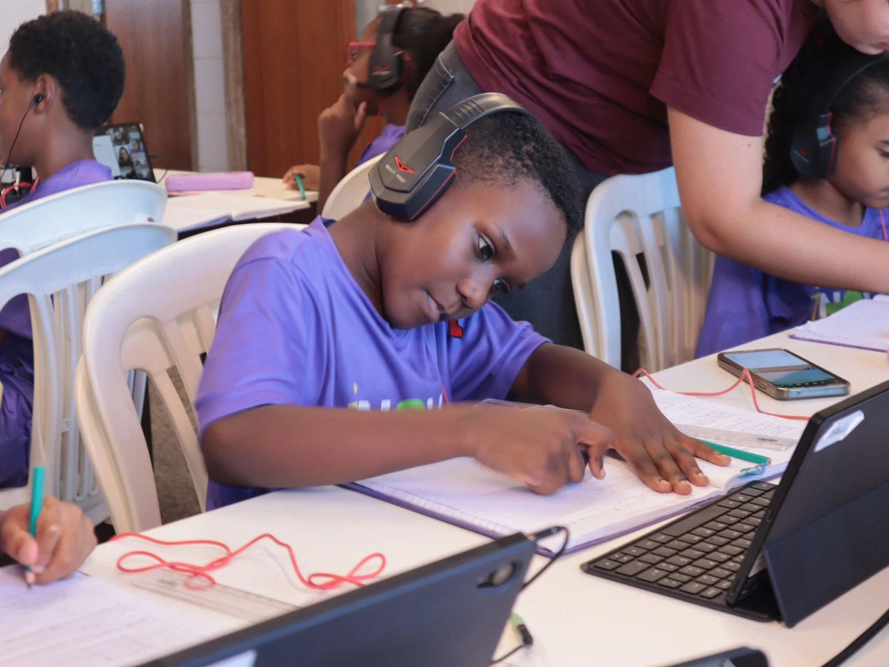
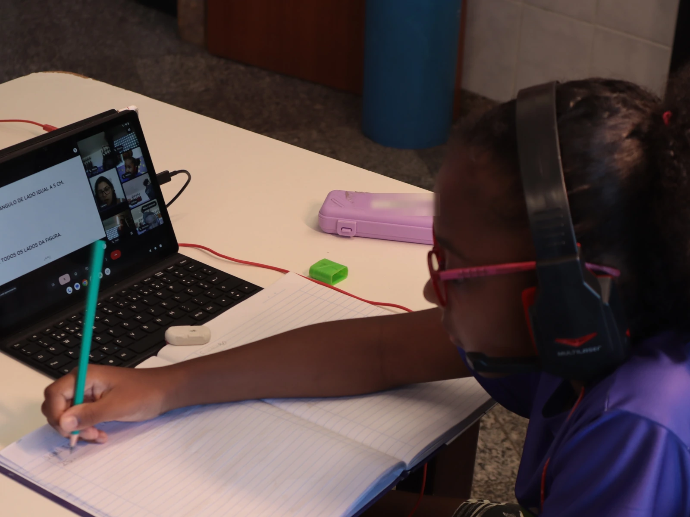

Inova Bem
Aula particular de Português, Matemática e Inglês para quem nunca teria uma
Página em validação
Esta página tem 3 informações que o SECRI ainda precisa confirmar. Os trechos marcados no texto aparecem abaixo:
- Número de vagas
- Faixa etária atendida
- Dias e horários das aulas

O que o projeto faz
Aulas semanais e personalizadas: o conteúdo parte da dificuldade real de cada estudante, não de um programa igual para todos.
É aí que está a diferença. Uma criança com dificuldade em interpretação de texto não precisa da mesma aula que outra travada em fração. Em sala de escola pública com trinta alunos, as duas recebem a mesma explicação. No Inova Bem, não.
Cada estudante tem tablet, teclado e fone de ouvido, e acompanha a professora por videochamada enquanto resolve os exercícios no caderno, com educadores do SECRI presentes na sala para apoiar.
O que o projeto persegue
Três objetivos, nesta ordem:
- Aumentar a proficiência escolar nas três disciplinas
- Ampliar o repertório e as possibilidades de futuro
- Manter o estudante na escola: o abandono escolar é o risco que o projeto ataca na raiz
O relatório do SECRI descreve a meta como preparar crianças e adolescentes "com possibilidades amplas para um futuro promissor, motivando-os a permanecer na escola".
Para quem é
Crianças e adolescentes atendidos pelo SECRI, moradores do Território do Bem - Consolação, Gurigica, São Benedito, Itararé, Bonfim, Bairro da Penha, Jaburu, Floresta e Engenharia.
Quem torna possível
Parceria com a Luma - Ensino Personalizado, responsável pela metodologia e pelas aulas.
O projeto em imagens


Perguntas frequentes
Que matérias o projeto atende?
A aula é online ou presencial?
Precisa ter computador ou internet em casa?
É só para quem está com nota baixa?
Como inscrevo meu filho?
Quer apoiar este projeto?
Projetos como este existem porque pessoas e empresas decidiram apoiá-los.